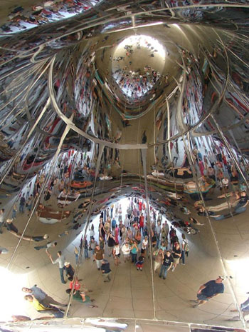
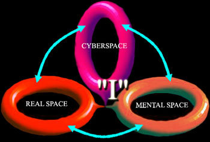

1000 DAYS OF THEORY
Art at the Event Horizon
Avi Rosen
Translation bySonia Dantziger
Space is the distribution of mass in space. A large concentration of mass and energy in a certain location creates a distortion of space-time that
bends the path of light rays surrounding that place. The power of gravity at a given threshold creates a black hole, an area in space-time from which
nothing can escape, not even light. The event horizon is the edge of the black hole, the boundary of the area from which it is impossible to exit. In
the centre of the hole is a singularity, a place in which distortion is infinite. An object caught in the black hole where time is slowed, loses its
resting energy. In order to conserve its total energy, it converts its mass into kinetic energy and radiation. The object will lengthen greatly from
the event horizon to the point of singularity. According to Roger Penrose, a black hole that rotates on its axis or has an electric charge allows
entry to and exit from its area without being trapped by its singularity.[1] Roy Kerr found that a
spacecraft launched along the length of the turning axis of a black hole can pass uneventfully to parallel space through the Einstein-Rosen bridge.[2]
Figure 1. Einstein-Rosen bridge, Avi Rosen.
The bridge compresses time-space between the two worlds, and prevents collapse into the singularity. Within the inner boundary of the black hole,
light is trapped in a closed circuit. The movement generates a reflection, like a mirror room at an amusement park, that distorts and multiplies the
observer's approach. Time on the edge of the event horizon is very slow, to the point where it stands still. Although we cannot visually perceive a
black hole in space, we can feel its power of attraction on objects in its vicinity, and the resultant changes in paths and velocity.[3] The entropy (the number of internal states) of a black hole yields information of what fell into the
black hole and is likely to be stored, like on a record, enabling it to be replayed when the black hole disappears. From this, one may suppose that
information regarding all phenomena in the three-dimensional world can be stored at its two-dimensional boundary like a holographic picture, or like
images seen on the event horizon.[4]

Figure 2. Black Hole vision simulation. "Cloud Gate", Anish Kapoor, Millennium Park, Chicago.
Photo: Andrey Kravtsov.
A black hole with a mass similar to the mass of the Earth will be 18 mm in size; two-dimensional objects inside it will be observed on its event
horizon. Unlike in Euclidean geometry, which characterizes linear space outside the black holes where the diffusion of mass is small, the geometry of
black holes is of bent spaces and planes joined by worm holes which conform to Georg Riemann's geometry and Einstein's general theory of relativity.[5]
Figure 3. Stereo-graphic view of the Globe, Avi Rosen.
Cyberspace is electronic space, composed of computer networks like the Internet; in them information moves at the speed of light. At that speed
less than 0.1 seconds is needed for an electronic signal to join the two most distant points on Earth. The mass and energy of cyberspace compresses
the Earth to a black hole with an event horizon of approximately 2 cm,[6] located at a near-zero distance
from the users connected to it.
Figure 4. Explosion of human body, implosion of the Globe, Avi Rosen.
Networks consist of connections between terminal points that create junctions. These junctions are joined to bigger junctions, which, in turn, are
joined to a central hub that processes information according to the Bose-Einstein condensation law.[7] In
other words, central junctions, like Google, Yahoo and Microsoft, achieve the greatest number of connections to pages in the network. Cyberspace
formation resembles that of black holes into whose singularities all information is hurled to the event horizon. The event horizon is, in this case,
various assigned tools such as computer terminals, cameras, television, microphones, telephones and other sensors that convert the real world into
digital information. The silicon chip generates teleportation of linear time-space into electronic information that travels at the speed of light in
the bent space of cyberspace.
Figure 5. Internet Hub as a black hole, http://research.lumeta.com/ches/map/gallery/index.html
This connection creates an augmented reality that can also be defined as merging real time-space with the virtual, adding higher dimensions to the
real ones.[8] The continuing growth of virtual energy and mass in relation to the realities increasing
the effect of the black hole can be represented by the proportion:
Material-energy → time-space distortion
The energy of stored data in cyberspace influences processes in the real world. Examples of these processes include industrial production,
security, air dominance, banking, medicine, and digital information. The power of gravity in cyberspace accelerates the speed of objects in motion in
the real world, and sweeps them spirally over its singularity, like in the Stock Exchange crash in 1987. The human brain is a mass containing billions
of neuron synapses, clustered into groups that carry out specialized actions. Every area and route to the brain is responsible for a certain function,
such as sight, speech, smell, and so on.[9] Thought and motion stem from the data flowing to the brain
and are stored in cognitive modular mapping.
It is possible to compare areas of the brain to micro-black holes, or centres in cyberspace where Bose-Einstein processes take place. The wrapping
of the body, including the senses, serves as an event horizon, and the singularity as the soul or consciousness. The topology of consciousness
resembles a torus, allowing circular movement from place to place in consciousness, and also making jumps in space-time, similar to networks in
cyberspace and black holes in space.
Figure 6. Human cognition as a black hole, from: Richard Dagan, http://intraspec.ca/cogmap.php
The role of the associative cortex is to establish new nets and the omni connection of neurons in the brain. This is similar to an internet
build-up. The brain has no knowledge in it until the neuron interconnection is built. Our identity is based on how our neurons are interconnected.[10] New technologies like the neural microcircuit, which links live neuron cells to an electronic
interface, enabling the direct connection of our body to computer networks. This extends the associative cortex of each human to the expanded capacity
of the human brain and its internet extension, or the super neo-cortex, which in turn is linked to all the other network participants creating a
united super brain with integrated consciousness. This act is equal to a build-up of a black hole containing a Giga array of super-computers at its
singularity, processing a task incoming from its event horizon. On the other end, we have the increasing amount of hardware, linked to the internet,
that contributes to its black hole mass.
Within about 200 years the human body has accelerated from the speed of walking to the speed of light,[11] propelled by electro-magnetic waves towards the cyberspace singularity. Man is in an advanced stage of evolution in the
symbiotic process that unites his body with electronic and biological components. The data-suit and VR Headset -- containing electronic implants that
penetrate the body -- enable direct teleportive contact between neuron networks within our bodies and those in cyberspace (and the real world). The
human brain, composed of three layers (Reptilian Complex, Limbic System and Neocortex) has acquired another layer, the super-neocortex that augments
imagination and wisdom and accelerates judgement of time and space. In other words, our central nervous system is connected through computer networks
to events occurring on Earth,[12] and reacts to these events as though they were occurring in the
physical body. The world becomes integrated with our own bodies.
Evolution connects the human event horizon to that of cyberspace, and, also, to real space. We are in the accelerated process of the virtualization
of real objects that acquire virtual components in cyberspace. Cyberspace, connected to the human body, swallows real distance and shrinks it to a
minimum. The triangular joining of the three spaces, whose torus shape creates a large mass, bends space into a closed loop, orbitfold-shaped.[13] The meeting point is the place of the new SELF, or the symmetry/unity point of the three torus
spaces.[14]

Figure 7. Orbifolding of 3 Torus shapes, Avi Rosen.
What are the differences between the topology of bent space at high speeds and the linear space that has dominated human consciousness until now?
To find the differences, we can examine an Albrecht Durer (1525) print portraying the artist drawing a model in perspective, with the aid of various
optical accessories, such as a frame, grid, and eyepiece. The resulting linear perspective, whose source is a single point, a singularity at an
infinite distance behind the model, is contained in the frame between the artist and the model. The image in the frame continues and enters a second
singularity point, through the eyes of the artist, to his brain and to his consciousness. After absorbing the image and its execution by the eye and
hand of the artist, the data becomes a static linear perspective painting on a page, which is the event horizon of the body. The painting is a
hologram that is a 2-dimensional view of the event horizon of a 3-dimensional object.
Figure 8. Perspective linear optics.
Albrech Dürer (1471-1528) Draftsman Making a Perspective Drawing of a Woman, 1525. Metrropolitan Museum of Art, New York.
Now we will substitute a spherical (Einsteinian) lens for the optical linear installation of Riemann; it is cyberspace, and the pencil is a data
glove. At low speed we do not feel the distortion because the picture is reflected through the equator of the lens. At higher speed and mass,[15] we will approach axis poles of the three singularities of the orbifold. At this point the data
received through the artist's senses will be processed by his consciousness, and subsequently translated into the data glove that is the observed
object itself. An artist who paints with a data glove unites with the object. An artist's act of observation determines the subject's final state.[16] The diffusion of mass and energy in the universe prevents the collapse of matter, or a short circuit
of thought, action and result. The transition to seeing and acting at the speed of light demands delay interface to slow the speed of engagement with
that which our regular senses can process. Art that exists in cyberspace is an interface used to cope with the visualization of the time-space
distortion that converts distorted time-space near the singularity into the shapes of traditional, linear perception that we are used to outside of
cyberspace.

Figure 9. Curved optics (Einstein lens) at Cyberspace, from http://www.3dnews.ru
Understanding this special topology allows a different approach to phenomena from the perspective of digital media and cyberspace. We will examine
a concept utilized by Baudrillard, Virilio and Jameson: simulacra. For Baudrillard,[17] it is a sign in
which the relations of representation between the signifier and the signified, and between images and reality, disappear; the signifier functions
independently in a closed circle. It is no longer a question of imitation, nor of reduplication, nor even of parody. It is rather a question of
substituting signs of the real for the real itself.
Jameson [18] uses the term simulacrum in the context of photorealism, a painting from a photograph,
images on a television screen by Nam Jun Paik, the polyester images of Duane Hanson, and the radical decline of nature. Virilio [19] relates all physical dimensions to simulacra, as an echo of the Big Bang. What was defined until now
as simulacrum is only an added, higher dimension of a physical object. Electromagnetic waves transmitted from the real object move at the speed of
light and enter beyond the event horizon of cyberspace. The movement of the waves and their interference inside the closed torus generate a
multiplication and distortion of the image.
Figure 10. Images in Super Torus, Avi Rosen.
Figure 11. Multi screen Image (Simulacrum), from Sky News.
The waves scatter and are ejected from the cyberspace event horizon, creating feedback to the object, changing its characteristics, and oscillating
endlessly. Television screens in general and those of Paik in particular, are only 2-dimensional holograms of 3-dimensional bodies on the event
horizon of cyberspace. Replication cannot exist without the original object, and the feedback that returns to it. Thus, the simulacrum is an
additional dimension, exactly like the volume, shadow, and weight of a physical object. The entropy of cyberspace is the sum of the data that falls
into it. Therefore, it is a reflection of the objects connected to it, and not of those that are unconnected. Hyper-reality, or hyperspace, is
described by Baudrillard [20] as a reality that has lost its appearance, locality and significance;
according to Virilio [21] it is a loss of reality; and for Jameson [22] it is the space of motion that is not understood. These interpretations of reality are not valid. It is the same reality, but
now reflected inside the topographic torus and observed at high speed.
The new reality creates a feeling of schizophrenia and dichotomous personality. According to Jameson, the individual cannot locate her/himself in
space (Bonaventura Hotel), and experiences crises in her grasp of time and the stream of past, present, and future. Virilio describes how NASA
scientists use data suits in order to activate a distant robot on Mars, this action places them simultaneously in two distant and dislocated places.[23] According to Baudrillard [24] cyberspace networks also
create schizophrenia. For Jameson [25] it is the illusion of meaning. Virilio [26] relates to the phenomenon as super-natural, and even religious -- the data and information suits transform the person into a
spectre, located in a number of places at the same time. Virilio seeks a philosophical discussion comparing presence versus tele- presence, and
presence versus teleportation.
Splitting or distortion characterizes a body falling beyond the event horizon of a black hole. The body lengthens greatly to form a one-dimensional
string, and continues outside the event horizon over the infinity of the singularity, while time seemingly slows down and distance shortens. This is
equivalent to the feeling of a hand wearing a data glove, activating a robot on Mars from afar; moreover, this feeling is also relevant to Virilio's
explanation of a person who, when equipped with a data-suit, appears to be paralysed in a wheelchair. This is not comparable to schizophrenia,
paralysis, or spectres and the supernatural. It is the same linear reality as before, experienced now in extreme conditions of high velocity and mass,
travelling through a worm hole.
The end of music and the image
Hi-Fi music is not the end of music, as Baudrillard contends, just as a hyper-spectral image is not the end of the image. They are augmented
realities with additional dimensions of sound and image beyond those we are accustomed to experiencing at lower speeds.[27] In order to experience the whole spectrum of these new qualities, we need technology. Digitally augmented sounds and pictures
do not conceal the object with hyper-real synthetic perfection, but open up a wide variety of possibilities, over and above what we are used to
hearing and seeing. The development of the super-neocortex enables absorbing, processing, aesthetic judgement in the widened field of our senses.
Super-resolution, hyper-spectral images, digital watermarking, compression, and decompression of information are technologies that make this complex
mission possible.

Figure 12. Hyper-spectral image, public domain image.
We are cyborgs, implanted with electronic components, wearing data suits, teleporting bodies to parallel existences, through black holes, and
returning safely. Technology is the problem and the remedy for this new reality. In this subjective situation, one does not observe reality directly,
but by means of the super-neocortex. The actuality of observing space with electronic aid changes its characteristics by changing the location of the
observed particles, by electronic means (scanning electron microscope). Seeing changes reality and the characteristics of matter. One can say that the
creative thought of the artist at the meeting of three singularities -- of human cognition, the real world, and cyberspace -- changes and reflects
reality, and creates an inter-subjective integrated consciousness.[28] Einstein asked how the world
would look while riding on a beam of light? Perhaps this is the answer.
What are the implications of these insights for cyberspace art? New media art which utilizes digital equipment like computers is subject to
physical laws. The electronic chip accelerates the artistic object, from its realm of low speed and mass outside of the cyberspace event horizon, to
an immediate bent, high speed and high mass cyberspace black hole. This transformation is typical of all technologies exploiting electromagnetic
waves. The huge spread of digital cameras and cell-phones produces an audio-visual data tsunami consisting of hundreds of billions of digital images
and cell-calls per year, spinning through the global electronic net. This is a socio-environmental and omnipresent artistic act, which unites its
global participants. In Israel, on average, there is more than one cellular phone per capita, and the numbers are growing. There are many new media
artists creating a wide range of art on the internet.
Here, I will analyze some of my new media work over the last 20 years. The beginning of such an art form in Israel was very modest. In 1984 some
computer images that I created on IBM PC XT using Basic software were
transmitted from Jerusalem to Haifa via a fax machine. The plan was to send them across the world to Australia, New York and back to Jerusalem. Lack
of financing left the plan with only its initial Jerusalem-Haifa leg. Five years later, in my computer based installation Arcadia (1990 Haifa Museum of modern art,) a wide range of images, videos and sounds, from several databases were compressed into
superimposed loops running on three Amiga computers. The museum was the epicenter of the black hole and its singularity would develop later on. The
viewer at the museum functioned as a convergence point of the media art database. "There was free art data flow, abolishment of the originality
concept in art, and transformation of the art consumer into an art creator; the next phase is direct connection to the art consumer brain."[29] The development of this concept was achieved with Art-Net (1992), an art database, utilizing a Novell
net of hundreds of computers at the Technion Electrical Engineering Faculty, Haifa, Israel. The art was made available like other on-line features
used on a daily basis at the faculty. The artistic project reduced to a minimum the distance between centre-and-periphery and that of the
artist-and-art-consumer, and made free and instant art consumption possible. In fact, some of the students downloaded images and printed them on their
shirts. Art-Net functioned as a black hole, attracting artistic objects outside of its effect horizon of computer terminals to its singularity, the
server. This trapped the data circle within the net boundaries, and diffused it outwards by means of terminals, printers, fax machines, modems and
telephone lines. An increase to the Art-Net perimeter was made in the same year, when at the opening of Frames (a computer art exhibition, at Yavne Art Workshop, some 120 kilometres
south of Haifa) a computer link was established to the Technion. This act reduced the centre-to-periphery distance to zero time, or to a single mouse
click. Visitors at the gallery downloaded images from the Technion server and performed manipulations on them.[30] The rise in the number of connected computers to the net increases the mass, size and attraction force of the black hole and
its impact on the real world.
Figure 13. One of the Technion data base images downloaded at FRAMES (1992) exhibition, Avi Rosen.
In November 1993, the extent and range of ART NET activities was significantly increased, in the context of the conference FISEA 93 that took place in Minneapolis, U.S.A. A link was created with a server at
the Technion, through Internet and Gopher protocol. It downloaded art works from Israel and presented them in the U.S in real time. At the beginning
of 1994, the first site of an Israeli artist on the net.art
site in the U.S widened the art net, using the graphic browser MOZAIC. Using the Internet in this way compressed the size of the Earth to a minimum,
and lengthened the reach of the artist and the art consumer to the point that they have now reached nearly every spot on Earth. This linked
Minneapolis to Haifa, uniting various users at the same spot. These users viewed works of art simultaneously, as though they were in the same place
at the same time, or in other words as though they simultaneously touched works of art that became singularity points and joined a common orbifold.
While surfing, did the viewers see the simulacra? Did they feel schizophrenic? Was their experience of hyper-reality accompanied by physical
paralysis? The answer is of course negative. The artistic object dispersed by the speed of light reaches places and distant viewers at the same time.
The multiplication of images on computer screens all over the world reflects electro-magnetic waves that are trapped, that move in closed loops within
the topology of the torus and are eventually emitted beyond the event horizon of cyberspace. The computer and screen provide the escape velocity
required for the release from this spin.
In order to understand this, the observer of art must perform a mental correction or jump whose basis is the understanding that his/her body is not
split and is not found in either the U.S. or Israel, but is transformed as a result of the movement that stretched his/her body on one hand, and
reduced the physical distance on the other. Such a correction is a daily occurrence for us, when we talk on the cellular phone, look through the
security camera outside of a building, or activate a machine by remote control. These actions really connect two distant places through a worm hole.
The use of electronic equipment that transports us through a black hole slows and stretches time. Sitting motionless, bending forward and
concentrating on what is on the computer screen, our body seems paralyzed. The computer connected to the net functions as Einstein's lens, having
immense mass that bends and focuses the electronic waves of knowledge that are stored in cyberspace. We relate to the phenomenon as perfectly natural,
but to people of other cultures, or to those who have not been exposed to new technology, it is not natural at all and sometimes seems miraculous.
The additional interactive capability of works of art on the net allows for reality to be changed by a look, a thought, or a click of the mouse. As
an example, my creation FREE ART (1999) enables the surfer to intervene and to change
the component parts of a picture at will, an action much like changing the location of the atoms of a substance during observation by means of a
scanning probe microscope, or nano manipulation of matter, in which electronic rays activated by the observer change the location of atoms in a
substance.
Figure 14. SEM (Scanning Electron Microscope) image, Photo: Alex Lahav, FIB Laboratory, Technion IIT.
"GaAs Columns" was taken at GaAs (compound semiconductor) surface after FIB (focused ion beam) etching. The columns were formed
due to the masking effect of dirt particles on the sample surface.
Figure 15. FREE ART interactive, random net art, Avi Rosen, 1999.
For this creation, there is also a random component that arbitrarily changes the visual components that are depicted, and the sound that is heard
when a surfer enters. This is similar to the experiment with Schrödinger's imaginary cat imprisoned in a sealed box for an allotted time, alone with
volatile uranium that has a 50/50 chance of undergoing radioactive disintegration, and a Geiger counter that identifies the disintegration and
releases the fatal poison. In order to settle the question of whether the cat is alive or dead, we have to open the box and actually look at the cat.
So too, the observer of a work of art cannot know definitely the conditions of the work he will look at before seeing it.
The installation "Parallel Space"
(1999) creates a merging of three spaces--the mental, the real, and the virtual--for singularities of time and place. Several computers connected to
the net are operated by a surfer who works simultaneously at various sites. The artist who sits in a real room in front of the computers surfs and
acts at the same time on various random sites with video cameras installed on them, with virtual three-dimensional interactive surroundings, a
spiritual healing site, and other sites according to his/her choice. His/her activities are fed by, and feed the unifying space.
A similar unification is found in the creation "Teleporting an Unknown State" by
Eduardo Kac (1996), in which he grew a plant in a dark room by illuminating it with light from cameras on the internet directed at diverse sources of
light all over the world.
In this case the Internet became a life-giving organ and extension of the plant, uniting it with human bodies taking part in the project all over
the world. Likewise, the "Body/Aura extension" (Avi Rosen, 2000) project
utilized Bluetooth wireless technology for artistic purposes. An artist's presence causes the automatic synchronization of his desktop, mobile
computer, notebook (PC-PDA and PC-HPC) and mobile phone with other users. For instance, as soon as he enters a new space the artistic content (text,
audiovisual art data) in his notebook computer will automatically be updated to a consumer's desktop, or vice versa. The system extends the artist's
aura and amplifies his artistic capabilities. His presence induces content to the immediate space, and then to a wider space via the Internet or
cellular systems. His passages through time and space leave trails of transmissions. These trails can be considered as a continuous interactive
multidisciplinary artistic act.
Figure 16. Scheme of Body/Aura extension project, Avi Rosen, 2000.
Quantum theory determines that it is always impossible to know the state of a particle before a measurement is made. This principle stands at the
basis of the series "BIG OPTICS" (Avi Rosen 2003-2004) that simultaneously and
randomly concentrates on the computer screen of video clips, sound and text, from a number of databases. The product is a changing audio-visual
composition that describes the compression of time and space (black hole). Surfers watch, and at the same time change the reality and the observed
material by means of their computers, their observations, and their mouses. This action is an expression of the observer's awareness, exposed to the
stimuli of his various senses and the result is the joining point of 3 singularities in the orbifold. What is seen on the screen are images trapped
inside the black hole of cyberspace and emitted randomly to the event horizon, following the observer's intervention. This constitutes a joining or
implanting of electronic components in the human body, as in the works of Eduardo Kac (Time
Capsule), Steve Mann, and Stelarc, in which technology has been inserted inside the body, thus
creating expansions of the neo-cortex and direct connection of the physical body to cyberspace and to the real world.
Notes
---------------
[1] Nigel Calder. Einsteins Universe. Hebrew translation: Dr. Dvir Adam. Moshav Ben-Shemen.
Modan Publishing, 1979. p. 35
[2] Michio Kaku. Hyperspace a Scientific Odyssey through Parallel Universes, Time Wraps, and the
Tenth Dimension. Hebrew translation: Emanuel Lotem. Or Yehuda. Maariv Book Guild, 1994. p. 252
[3] Michio Kaku. Hyperspace a Scientific Odyssey through Parallel Universes, Time Wraps, and the
Tenth Dimension. Hebrew translation: Emanuel Lotem. Or Yehuda. Maariv Book Guild, 1994. p. 255
[4] Hawking Stephen. The Universe in a Nutshell. Hebrew translation: Emanuel Lotem. Or Yehuda.
Maariv Book Guild, 2001. p. 71
[5] Charles Seife. Zero the Biography of a Dangerous Idea. Hebrew translation: Lerner Arie.
Raanana, Mi-An Press, 2000. p. 160
[6] Nigel Calder. Einsteins Universe. Hebrew translation: Dr. Dvir Adam. Moshav Ben-Shemen.
Modan Publishing, 1979. p. 60
[7] Albert-Laszlo Barabasi. Linked the New Science of Networks. Hebrew translation: Blisha
Drora. Yediot Aharonot Press, 2002. p. 140
[8] Alexander Hellemans. Teleporting what Matters. IEEE Spectrum, Sept., 2004. p. 9-10
[9] Leonard Shlain. "Art & Physics Parallel Visions," in Space, Time & Light. New York
Morrow, 1991. p. 392
[10] Richard Restak. Mozarts Brain and the Fighter Pilot. Hebrew translation. Tamari Anita.
Tel Aviv. Arie Nir Publishers, 2001. p. 26
[11] David Harvey. The Condition of Postmodernity. Cambridge Massachusetts. Basil Blackwell,
1989. p. 241
[12] Marshall McLuhan. Understanding Media. Hebrew translation: Shorer Idit. Tel-Aviv. Bavel
Press, 1964. p. 9-10
[13] Brian Greene. The Elegant Universe. Hebrew translation: Carmel Amos. Tel-Aviv. Matar
Press, 1999. p. 219
[14] Michio Kaku. Einstein's Cosmos. Hebrew translation: Levinson Nurit. Tel-Aviv, Nir Arie
Publisher, 2004. p. 58
[15] Michio Kaku. Einstein's Cosmos. Hebrew translation: Levinson Nurit. Tel-Aviv, Nir Arie
Publisher, 2004. p. 10
[16] Michio Kaku. Einstein's Cosmos. Hebrew translation: Levinson Nurit. Tel-Aviv, Nir Arie
Publisher, 2004. p. 135
[17] Jean Baudrillard. Simulations. Trans. Foss, Patton and Beitchman. New York:
Semiotext(e), 1983. p. 4.
[18] Fredric Jameson. Postmodernism, or, the Cultural Logic of Late Capitalism. Hebrew
translation: Grimberg-Hirsh Adi. Tel-Aviv. Libido Resling Press, 2002. p. 51
[19] Paul Virilio and Sylvere Lortinger. Crepuscular Dawn. Trans. Taormina. New York:
Semiotext(e), 2002. p. 81
[20] Jean Baudrillard. "Pataphysics of Year 2000," 1992. http://www.uta.edu/english/apt/collab/texts/pataphysics.html
[21] Paul Virilio. Open sky. Trans. Rose, J. London: Verso, 1997. p. 75
[22] Fredric Jameson. Postmodernism, or, the Cultural Logic of Late Capitalism. Hebrew
translation: Grimberg-Hirsh Adi. Tel-Aviv. Libido Resling Press, 2002. p. 63
[23] Paul Virilio. Open sky. Trans. Rose, J. London: Verso, 1997. p. 16
[24] Jean Baudrillard. "The Ecstasy of Communication". In: Hal Foster (ed.), Postmodern
Culture. London: Verso, 1987. p. 126-134
[25] Fredric Jameson. Postmodernism, or, the Cultural Logic of Late Capitalism. Hebrew
translation: Grimberg-Hirsh Adi. Tel-Aviv. Libido Resling Press, 2002. p. 45
[26] Paul Virilio and Sylvere Lortinger. Crepuscular Dawn. Trans. Taormina. New York:
Semiotext(e), 2002. p. 86
[27] Jean Baudrillard. "Aesthetic illusion and virtual Reality." In: Zurbrugg Nicholas (ed.).
Jean Baudrillard, Art and Artefact. London, Thousand Oaks, New Delhi. SEGA Publications, 1997. p. 25
[28] Pierre Lévy. Collective Intelligence: Mankind's Emerging World in Cyberspace.
Trans. Robert Bononno Helix Books, Cambridge, Massachusets, 1997. p. 214-220
[29] Avi Rosen. Robotrikim lo kotzeztim oznaim. Interview with Alon Maoz (in Hebrew) Kol-Bo
Newspaper, 2.12.90, 1990. p.64
[30] Rosen, Avi. 'STUDIO' Art Magazine. Jan.1993. No. 40, 1993. p. 63.
References
---------------
Barabasi, Albert-Laszlo. Linked the New Science of Networks. Hebrew translation: Blisha Drora. Yediot Aharonot Press, 2002.
Baudrillard, Jean. Simulations. Trans. Foss, Patton and Beitchman. New York: Semiotext(e), 1983.
Baudrillard, Jean. "The Ecstasy of Communication". In: Hal Foster (ed.), Postmodern Culture. London: Verso, 1987.
Baudrillard, Jean. "Pataphysics of Year 2000," 1992. http://www.uta.edu/english/apt/collab/texts/pataphysics.html
Baudrillard, Jean. Aesthetic illusion and virtual Reality. In: Zurbrugg Nicholas (ed.). Jean Baudrillard, Art and Artefact. London, Thousand
Oaks, New Delhi. SEGA Publications, 1997.
Calder, Nigel. Einsteins Universe. Hebrew translation: Dr. Dvir Adam. Moshav Ben-Shemen. Modan Publishing, 1979.
Greene, Brian. The Elegant Universe. Hebrew translation: Carmel Amos. Tel-Aviv. Matar Press, 1999.
Harvey, David. The Condition of Postmodernity. Cambridge Massachusetts. Basil Blackwell, 1989.
Hawking Stephen. The Universe in a Nutshell. Hebrew translation: Emanuel Lotem. Or Yehuda. Maariv Book Guild, 2001.
Hellemans, Alexander.Teleporting what Matters. IEEE Spectrum, Sept., 2004.
Jameson, Fredric. Postmodernism, or, the Cultural Logic of Late Capitalism. Hebrew translation: Grimberg-Hirsh Adi. Tel-Aviv. Libido Resling
Press, 2002.
Kaku, Michio. Hyperspace a Scientific Odyssey through Parallel Universes, Time Wraps, and the Tenth Dimension. Hebrew translation: Emanuel
Lotem. Or Yehuda. Maariv Book Guild, 1994.
Kaku, Michio. Einstein's Cosmos. Hebrew translation: Levinson Nurit. Tel-Aviv, Nir Arie Publisher, 2004.
Lévy, Pierre. Collective Intelligence: Mankind's Emerging World in Cyberspace. Trans. Robert Bononno Helix Books, Cambridge,
Massachusets, 1997.
McLuhan, Marshall. Understanding Media. Hebrew translation: Shorer Idit. Tel-Aviv. Bavel Press, 1964.
Restak, Richard. Mozarts Brain and the Fighter Pilot. Hebrew translation. Tamari Anita. Tel Aviv. Arie Nir Publishers, 2001.
Rosen, Avi. Robotrikim lo kotzeztim oznaim. Interview with Alon Maoz (in Hebrew) Kol-Bo Newspaper, 2.12.90, 1990. p.64
Rosen, Avi. 'STUDIO' Art Magazine. Jan.1993. No. 40, 1993. p. 63.
Seife, Charles. Zero the Biography of a Dangerous Idea. Hebrew translation: Lerner Arie. Raanana, Mi-An Press, 2000.
Shlain, Leonard. "Art & Physics Parallel Visions," in Space, Time & Light. New York Morrow, 1991.
Virilio, Paul. Open sky. Trans. Rose, J. London: Verso, 1997.
Virilio, Paul and Lortinger, Sylvere. Crepuscular Dawn. Trans. Taormina. New York: Semiotext(e), 2002.
--------------------
This article is available in its original Hebrew version at:
http://siglab.technion.ac.il/~avi/horizon/Horizon_heb.htm
--------------------
Avi Rosen is a PhD candidate, Faculty of the Arts, the Art History Department, Tel Aviv University. M.Sc. Industrial Design,
Technion I.I.T. 1984 B.F.A. "Bezalel" Art Academy, Jerusalem. Electronics Practical Engineer "Junior Technical Collage", Haifa. Working at the Signal
Processing Lab. Department of Electrical Engineering Haifa Technion I.I.T. Teaching "New Media Art" at Art Department, Haifa University and Art
Institute of 'Oranim' the 'Kibutzim' seminary, Tivon.
Sonia Danziger works as a translator of texts from Hebrew to English. She has taught English for 27 years at various institutions of higher learning,
including the Technion.